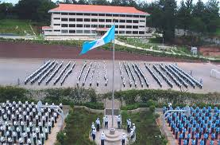

BIENVENIDOS A NUESTRO COLEGIO "VILLA DE LOS NIÑOS
La "villa de los niños" es una instucion educativa y catolica que ha venido desempeñando una labor social, desde tiempo atras, a favor de la niñez que carece de los recursos necesarios para seguir estudiando, surgio apartir del ideal del ya finado Monseñor Aloysius Schwartz de cuidar, educar y dar un futuro brillante a los los huerfanos y niños que provienen de las familias mas marginadas. en esta institucion se cursa la secundaria y bachillerato tecnologico.
MISION, VISION Y REQUISITOS
Su mision de las Hermanas de Maria
dirigen su energia y sus recursos a
los jovenes mas pobres de los
pobres del pais, proyectandoles
con una educacion secundaria y bachillerato.
1.Haber culminado la educacion primaria.
2.Tener entre 12y 14 años
3.Tener voluntad de estar lejos de la familia.
PAISES DONDE SE ENCUENTRA LA INSTITUCION
Corea del sur
Honduras
